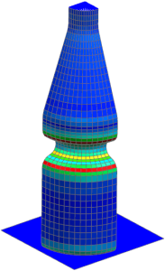

Create a contour plot of strain on undeformed geometry
 Post-Processing Navigator
Post-Processing Navigator
-

 LDC (expand)
LDC (expand)
-
Increment 20, Time = 2.000e+001 s (expand)
-
Nonlinear Strain - Element - Nodal (expand)
-
 Von-Mises
Von-Mises
 Edit Post View (Post Processing group)
Edit Post View (Post Processing group)
-
 Deformation
Deformation -
OK
